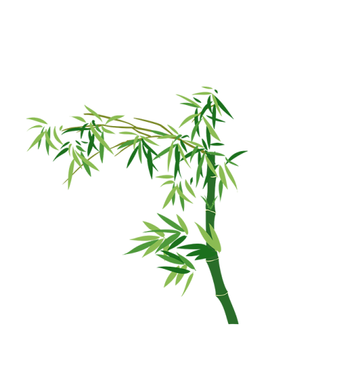
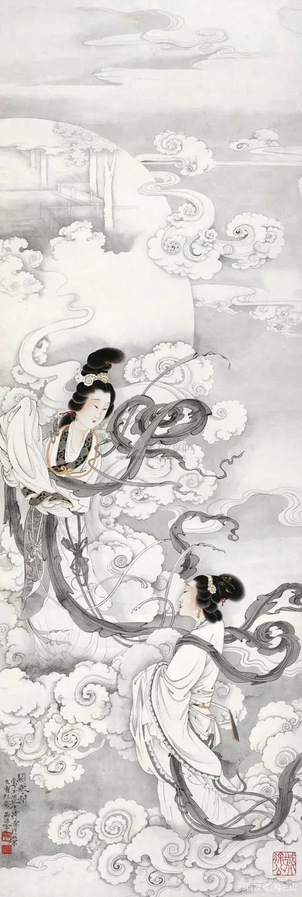
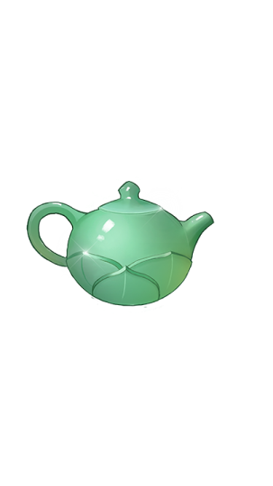
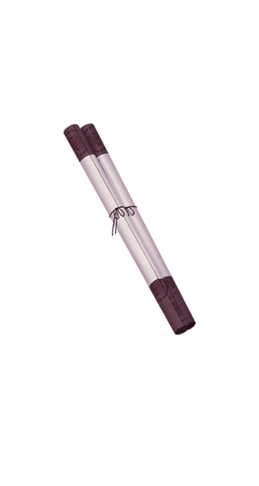

竹子春不争荣，冬不枯谢，不趋炎附势的高风亮节，与黛玉清高纯洁，不与世同流合污的性格多么一致；竹抗风暴，傲霜雪，与松梅素有“岁寒三友”之称，这与黛玉孤高自傲的叛逆思想和反抗性格又多么相投；“斑竹一枝千滴泪”，竹又烘托出林黛玉用泪来表示爱情忠贞专一，至死不渝的个性特征。竹，不但增添了潇湘馆的清幽寂静的气氛，更烘托了黛玉孤独的身世和悲凉的心境。

此图为《斗寒图》，贾宝玉看到这幅画，问道：“是什么出处？”
黛玉笑道：“岂不闻'青女素娥俱耐冷，月中霜里斗婵娟’。”这句诗出自李商隐的《霜月》：
“初闻征雁已无蝉，
百尺楼台水接天。
青女素娥俱耐冷，
月中霜里斗婵娟。”
续书者也是想通过室内书画的描述，尤其通过“斗寒图”的比喻，衬托林黛玉的孤傲高洁。"

宝鼎茶闲烟尚绿，幽窗棋罢指犹凉。
宝鼎，这里指煮茶用的炊具。作者紧扣了翠竹的特点，不着一“竹”字而把竹写得神态毕现。
上联言宝鼎不煮茶了，屋里还飘散着绿色的蒸汽；下联称幽静的窗下棋已停下了，手指还觉得有凉意。
这绿色的蒸汽，显然是翠竹的遮映所致；这凉意，也是因浓荫生凉之故。可谓视角形象与触觉感知二者俱兼。
联中的“茶闲”“棋罢”用得绝妙，吟诵此联，由景及情，由物及人，在贵族家庭中生活的公子哥儿、小姐们那种闲情逸致之情态，
似映入眼帘。这对联影射黛玉，赞其幽美清丽。“指犹凉”也暗示出黛玉最终的悲剧结局。

元春赐名. 潇湘馆潇湘，即指竹。按，潇湘,原为湘江别称，在今湖南省。
《山海经·中山经》：
交潇湘之渊。
郦道元《水经注·湘水》：神游洞庭之渊，出入潇湘之浦。潇湘者，水清深也。又传说尧有二女，长曰娥皇，
次曰女英，姐妹同嫁舜为妻。舜父顽，母嚣，弟劣，曾多次欲置舜城死地，终因娥皇女英之助而脱险。舜继尧位，娥皇女英为其妃，
后舜至南方巡视，死于苍梧。二妃往寻，泪染青竹，竹上生斑，因称潇湘竹或湘妃竹。二妃也死于江湘之间。故后世以潇湘指斑竹，
泛指竹。
三十七回探春开黛玉玩笑时说：如今他住的是潇湘馆,
他又爱哭,将来他想林姐夫,那些竹子也是要变成斑竹的.以后都叫他作‘潇湘妃子’就完了。似亦暗示黛玉最终之泪尽而逝。